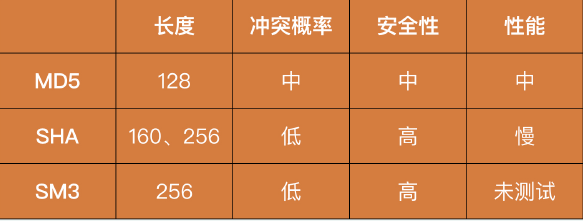

安全攻防技能
01 | 安全的本质
安全原则
CIA 三元组
机密性（Confidentiality）
用一句话来说就是，确保数据只被授权的主体访问，不被任何未授权的主体访问
“不可见”
机密性的一个前提是明确授权规则，也就是明确每一项数据可以被什么样的主体访问。在这个问题上，最安全的方法一定是，当每一次主体访问某一项数据时，都由相关负责人对该次行为进行审批。但是，这样显然是无法落地的。因此，在安全领域我们提出了很多访问控制机制和安全模型，对数据和访问主体打上标签或者进行分类，并制定相应的访问控制规则去自动进行授权。
针对机密性的攻击，都有哪些形式呢？
直接针对保护技术进行破解。
- 比如，去破解加解密算法、去逆向混淆代码等等。
人为原因导致的疏忽
- 比如，因为权限滥用，导致开发人员拥有敏感数据的无限制访问权限；
- 因为弱密钥，导致加密被破解；
- 甚至显示器上的数据被别有用心的人窥探
完整性（Integrity）
完整性就是确保数据只被授权的主体进行授权的修改
“不可改”
所谓“授权的修改”，就是对主体可进行的操作进行进一步的限制。比如，只能追加数据的主体无法执行删除的操作。以个人隐私信息为例，法律允许学校或者公司在个人档案内追加信息，但不能做任何修改。又或者说，你自己发的朋友圈，不希望被其他人进行修改。这些都是完整性的典型表现。
完整性会更加强调对修改行为的日志记录，并有合适的监督机制进行审计。在保护技术方面，主要是利用加密、签名等技术，使得数据的完整性变得可验证。
针对完整性的攻击
- 更多的是由于人为原因导致的疏忽。
- 除了黑客本身对数据的恶意篡改，已授权的主体也可能对数据完整性产生破坏，比如员工意外地误删除数据、程序 bug 导致错误数据被写入、正常用户的一些无效输入等。
可用性（Availability）
可用性就是确保数据能够被授权的主体访问到
“可读”
举个典型的例子，面对高峰期的集中用户访问，如何保障用户能够正常地获取数据（“双11”购物或者 DDoS 攻击等），你可以看到大量的研发人员对这个问题进行探讨和分享，但这其实都属于安全在可用性上的考量范围。
可用性会面临哪些挑战呢？
- 在运维层面上，有很多技术在为可用性提供支撑，比如，在基础建设上的机房建设（如何在断电、高温、火灾等情况下保护设备）、多地冗余，以及在服务中的备份、资源冗余等。
- 在研发层面上，如何降低响应延迟、如何处理海量数据、如何在峰值进行扩容等，这些问题其实都是在可用性上的挑战。
- 在攻击的角度上，黑客也会对可用性发起攻击，也就是我们常说的 DoS（Denial of Service，拒绝服务）攻击。比如，通过发送大量的流量来占满带宽资源。
02 | 安全原则：我们应该如何上手解决安全问题？
黄金法则
主要
- 认证（Authentication）
- 授权（Authorization）
- 审计（Audit）
次要
- 问责（Accounting）
- 身份识别（Identification）
三个部分
- 身份识别和认证
身份识别和认证通常是同时出现的一个过程。身份识别强调的是主体如何声明自己的身份，而身份认证强调的是，主体如何证明自己所声明的身份是合法的。比如说，当你在使用用户名和密码登录的过程中，用户名起到身份识别的作用，而密码起到身份认证的作用；当你用指纹、人脸或者门卡等进行登入的过程中，这些过程其实同时包含了身份识别和认证。
身份识别的过程并不关注合法性，因此，认证是这个部分中最为关键的一环。
认证形式
- 你知道什么（密码、密保问题等）；
- 你拥有什么（门禁卡、安全令牌等）；
- 你是什么（生物特征，指纹、人脸、虹膜等）。
- 在登录过程中，很多应用会在输入完账号密码后，让你进行手机验证，这其实就是结合了“你知道什么”和“你拥有什么”的双因素认证。
- 授权
- 在确认完“你是你”之后，下一个需要明确的问题就是“你能做什么”。
- 毫无疑问，在系统或者应用中，我们的操作都会受到一定的限制。比如，某些文件不可读，某些数据不可修改。这就是授权机制。除了对“你能做什么”进行限制，授权机制还会对“你能做多少”进行限制。比如，手机流量授权了你能够使用多少的移动网络数据。
- 最原始和最安全的授权机制，一定是你的每一次操作，都经过了管理人员的审批和确认。比如我们申请签证的过程，其实就是一次申请授权的过程。但这也意味着，会有很多的操作需要进行授权审批，其效率肯定是无法保证的
- 因此，很多时候，我们会定义自动化的授权机制来进行更快速地响应。比如，某些国家会制定免签或者落地签政策，只要符合一定的条件（如拥有中国护照），就能够直接出入境。这就相当于将“是否拥有中国护照”当成了一种授权的规则。
- 审计和问责
- 当你在授权下完成操作后，安全需要检查一下“你做了什么”，这个检查的过程就是审计。当发现你做了某些异常操作时，安全还会提供你做了这些操作的“证据”，让你无法抵赖，这个过程就是问责。
- 举一个生活中的例子，当你去银行办理业务时，工作人员会让你对一些单据签字。这些单据就是审计的信息来源，而签字则保证了你确认这是你进行的操作，这就是问责的体现。
- 审计和问责通常也是共同出现的一个过程，因为它们都需要共同的基础：日志。很容易理解，所谓审计，就是去通过日志还原出用户的操作历史，从而判断是否出现违规的操作。而问责则是通过日志的完整性，来确保日志还原出来的操作是可信的。
- 审计这一环节，对于发现安全问题、回溯产生的攻击、完善安全保护体系来说，非常重要。
- 而问责，是对审计结果的一个保障，有的时候我们也称之为“不可否认性”。一方面，它保证了黑客无法通过篡改日志或者仿造身份，来隐藏自己的行为；另一方面它也保证了，当审计中发现了恶意的行为，需要寻求法律保护时，我们能够提供充分的证据。
大部分情况下，事前防御属于认证，事中防御属于授权，事后防御属于审计。
企业安全建设管理
- 对于任何一个公司来说，建立安全体系都是一个长期过程
- 安全问题需要自上而下的方式去进行管理和推动。这也是为什么，大部分安全负责人加入企业做的第一件事就是向上教育，只有企业高层理解了安全，才有可能有效推动安全的发展。
最后
- 安全没有“银弹”。只有当可用性接近 0 时，我们才有可能接近 100% 的安全。比如，将电脑关闭电源并深埋地下。所以，在实际进行安全防御的时候，不要过分追
求完美，先有基本的保障就可以了。
03 | 密码学基础：如何让你的密码变得“不可见”？
密码学算法
对称加密算法
常见的经典对称加密算法有 DES、IDEA、AES、国密 SM1 和 SM4。
DES（数据加密标准，Data Encryption Standard）
- 是最早的现代密码学算法之一。它由美国政府提出，密钥长度为 56 位。目前，它暴力破解 56 位密码的时间，已经能控制在 24 小时内了。
- DES 实际上是一个过时的密码学算法，目前已经不推荐使用了。关于 DES，还有一点特别有意思。DES 包含一个关键模块：S 盒，其设计的原理一直没有公开。因此，很多人都相信，这个 S 盒中存在后门，只要美国政府需要，就能够解密任何 DES 密文。
IDEA（国际数据加密算法，International Data Encryption Algorithm）。
- IDEA 由瑞士研究人员设计，密钥长度为 128 位。对比于其他的密码学算法，IDEA 的优势在于没有专利的限制。
AES（高级加密标准，Advanced Encryption Standard）。
- 在 DES 被破解后，美国政府推出了 AES 算法，提供了 128 位、192 位和 256 位三种密钥长度。通常情况下，我们会使用 128 位的密钥，来获得足够的加密强度，同时保证性能不受影响。目前，AES 是国际上最认可的密码学算法。在算力没有突破性进展的前提下，AES 在可预期的未来都是安全的。
国密 SM1（SM1 Cryptographic Algorithm）和 SM4（SM4 Cryptographic Algorithm）。
- SM1 算法不公开，属于国家机密，只能通过相关安全产品进行使用。而SM4 属于国家标准，算法公开，可自行实现使用。国密算法的优点显而易见：受到国家的
支持和认可。
- SM1 算法不公开，属于国家机密，只能通过相关安全产品进行使用。而SM4 属于国家标准，算法公开，可自行实现使用。国密算法的优点显而易见：受到国家的
比较
延展
- 在选取加密算法的时候，存在不同的分组计算模式：ECB/CBC/CFB/OFB/CTR。选取 CBC和 CTR 这两种推荐使用的模式就可以满足大部分需求了，它们在性能和安全性上都有较好的保证。
非对称加密算法
除了加密功能外，大部分的非对称算法还提供签名的功能。这也就是说，我们可以使用私钥加密，公钥解密。一旦接收方通过公钥成功解密，我们就能够证明发送方拥有对应的私钥，也就能证实发送方的身份，也就是说，私钥加密就是我们说的签名。
经典的非对称加密算法包括：RSA、ECC 和国密 SM2。
RSA（RSA 加密算法，RSA Algorithm）。
- RSA 的数学难题是：两个大质数 p、q 相乘的结果 n 很容易计算，但是根据 n 去做质因数分解得到 p、q，则需要很大的计算量。RSA 是比较经典的非对称加密算法，它的主要优势就是性能比较快，但想获得较高的加密强度，需要使用很长的密钥。
ECC（椭圆加密算法，Elliptic Curve Cryptography）。
- ECC 是基于椭圆曲线的一个数学难题设计的。目前学术界普遍认为，椭圆曲线的难度高于大质数难题，160 位密钥的 ECC 加密强度，相当于 1088 位密钥的 RSA。因此，ECC 是目前国际上加密强度最高的非对称加密算法。
国密 SM2（SM2 Cryptographic Algorithm）
- 国密算法 SM2 也是基于椭圆曲线问题设计的，属于国家标准，算法公开，加密强度和国际标准的 ECC 相当。而国密的优势在于国家的支持和认可。
比较
场景
- 现在大部分的认证和签名场景，其实使用的都是非对称加密算法。比如，在SSH 登录、Git 上传等场景中，我们都可以将自己的公钥上传到服务端，然后由客户端保存
私钥。
- 现在大部分的认证和签名场景，其实使用的都是非对称加密算法。比如，在SSH 登录、Git 上传等场景中，我们都可以将自己的公钥上传到服务端，然后由客户端保存
散列算法
算法要求
- 不可逆性
- 鲁棒性（同样的消息生成同样的摘要）
- 唯一性（不存在两个不同的消息，能生成同样的摘要）
- 经典的散列算法包括 MD5、SHA、国密 SM3。
MD5（消息摘要算法，Message-Digest Algorithm 5）
- MD5 可以用来生成一个 128 位的消息摘要，它是目前应用比较普遍的散列算法。虽然，因为算法的缺陷，它的唯一性已经被破解了，但是大部分场景下，这并不会构成安全问题。但是，如果不是长度受限（32 个字符），不推荐你继续使用 MD5 的。
SHA（安全散列算法，Secure Hash Algorithm）
- SHA 是美国开发的政府标准散列算法，分为 SHA-1 和 SHA-2 两个版本。和 MD5 相同，虽然 SHA 的唯一性也被破解了，但是这也不会构成大的安全问题。目前，SHA-256 普遍被认为是相对安全的散列算法，也是最被推荐使用的散列算法。
国密 SM3（SM3 Cryptographic Algorithm）
- 国密算法 SM3 是一种散列算法。其属于国家标准，算法公开，加密强度和国际标准的SHA-256 相当。和国密 SM2 一样，它的优势也在于国家的支持和认可。
比较
- 
扩展
- 另外，我们在使用散列算法的时候，有一点需要注意一下，一定要注意加“盐”。所谓“盐”，就是一串随机的字符，是可以公开的。将用户的密码“盐”进行拼接后，再进行散列计算，这样，即使两个用户设置了相同的密码，也会拥有不同的散列值。同时，黑客往往会提前计算一个彩虹表来提升暴力破解散列值的效率，而我们能够通过加“盐”进行对抗。“盐”值越长，安全性就越高。
总结
- 对称加密用 AES-CTR、非对称加密用 ECC、散列算法用 SHA256 加盐。这些算法就能够满足大部分的使用场景了，并且在未来很长一段时间内，都可以保持一个较高的安全强度。
04 | 身份认证：除了账号密码，我们还能怎么做身份认证？
身份认证
对外认证
- 其实就是应用的登录注册模块，它面向用户进行认证。对外认证的入口比较集中，一个应用通常只有一个登录入口。因此，我们可以在登录这个功能上，实现很多种认证
的方式。
- 其实就是应用的登录注册模块，它面向用户进行认证。对外认证的入口比较集中，一个应用通常只有一个登录入口。因此，我们可以在登录这个功能上，实现很多种认证
对内认证
- 除了应用本身需要有登录注册的模块，应用的各种内部系统同样需要涉及登录认证的功能，比如：服务器的登录、数据库的登录、Git 的登录、各种内部管理后台的登录等等。
对外认证和对内认证的区别
- 对外认证是单一场景下的认证，对内认证是多场景下的认证。
身份认证主要面临的威胁
没有认证环节
- 所有应用和公司存在的最普遍的问题。尤其是在对内认证的部分，我们经常会看到，很多公司的数据库、接口、管理后台在使用的时候，并不需要经过认证这个环节。
弱密码
认证信息泄漏
- 所谓认证信息泄露，就是指黑客通过各种手段，拿到了用户的密码信息和身份凭证这样的认证信息。常见的手段包括钓鱼、拖库等等。
身份认证的安全怎么保证？
很多时候，我们解决安全问题，不只是在解决一个技术问题，还要培养外部用户和内部员工的安全意识。也就是说，认证安全并没有什么完善的技术解决方案，更多的是通过一些规章制度去强化我们的安全意识。
基本解决方案
- 对密码的强度进行限制（如强制使用字母、数字、特殊字符的组合密码，并达到一定长度）
- 强制用户定期修改密码
- 对关键操作设置第二密码（如微信、支付宝的支付密码）等等
新技术升级验证手段
- 通过手机验证替代密码验证（因为丢失手机的几率比丢失密码的几率低）
- 通过人脸、指纹等生物特征替代密码
其他方式
- 通过加密信道（如 HTTPS）来防止窃听
- 通过给下发的凭证设置一个有效期，来限制凭证在外暴露的时间，以此来减少重放攻击带来的影响。
身份认证的最大的问题还是在于身份管理。随着公司业务的不断扩张，当账号体系变得越来越复杂时，如何对这些账号进行统一的管理，是解决身份认证问题的关键。而单点登录就是一个非常有效的解决方案。
单点登录如何解决身份认证问题？
概念
- 用户只需要进行一次认证，就可以访问所有的网页、应用和其他产品了。
几种典型
CAS（Central Authentication Service，集中式认证服务）流程
- CAS 是一个开源的单点登录框架，它不属于某一种单点登录的实现方式，而是提供了一整套完整的落地方案。
- 图示
JWT（JSON Web Token）
- 非常轻量级的单点登录流程。它会在客户端保存一个凭证信息，之后在你每一次登录的请求中都带上这个凭证，将其作为登录状态的依据。
- JWT的好处在于，不需要应用服务端去额外维护 Cookie 或者 Session 了。但是，正是因为它将登录状态落到了客户端，所以我们无法进行注销等操作了。
OAuth（Open Authorization）
- 主要特点是授权，也是我们通常用 QQ、微信登录其他应用时所采用的协议。通过 OAuth，用户在完成了认证中心的登录之后，应用只能够验证用户确实在第三方登录了。但是，想要维持应用内的登录状态，应用还是得颁发自己的登录凭证。这也就是为什么 QQ 授权后，应用还需要绑定你的手机号码。这也就意味着，应用是基于 QQ 的信息创建了一个自身的账号。
OpenID（Open Identity Document）
- 和 OAuth 的功能基本一致。但是，OpenID 不提供授权的功能。最常见的，当我们需要在应用中使用微信支付的时候，应用只需要收集支付相关的信息即可，并不需要获取用户的微信头像。
实际情况
在实际情况中，基于各种业务需求的考虑，很多公司都倾向于自己去实现一套 SSO 的认证体系
图示
- 在这个流程中，应用的服务器直接接收用户的认证信息，并转发给认证中心。对用户来说，这个认证中心是完全透明的。但是，这个流程给予了应用过多的信任，从安全性方面考量的话，是不合理的。在这个过程中，应用直接获取到了用户的认证信息，但应用能否保护好这些信息呢？我们并没有有效的办法去做确认。
05 | 访问控制：如何选取一个合适的数据保护方案？
课程目的
- 介绍几种常见授权机制的概念和原理，以及在实际工作中我们该如何去选取合适的保护机制。
- “授权”和“访问控制”其实是同一个概念，都是允许或者禁止某个用户做某件事情。现在行业内普遍用“访问控制”这个术语来讨论相关问题。
访问控制模型
图示
一个主体请求一个客体，这个请求的授权由访问控制来完成。
主体
- 请求的发起者。主体可以是用户，也可以是进程、应用、设备等任何发起访问请求的来源。
客体
- 请求的接收方，一般是某种资源。比如某个文件、数据库，也可以是进程、设备等接受指令的实体。
请求
- 主体对客体进行的操作。常规的是读、写和执行，也可以进一步细分为删除、追加等粒度更细的操作。
常见的访问控制机制
DAC（Discretionary Access Control，自主访问控制）
- DAC 就是让客体的所有者来定义访问控制规则。
- 在 DAC 中，访问控制的规则维护完全下发到了所有者手上，管理员在理论上不需要对访问控制规则进行维护。因此，DAC 具备很高的灵活性，维护成本也很低。相对的，尽管 DAC降低了管理员的工作难度，但是会增加整体访问控制监管的难度，以至于安全性完全取决于所有者的个人安全意识。
- 这么说来，DAC 的特性其实就是将安全交到了用户手中，因此，DAC 适合在面向用户的时候进行使用。当用户需要掌控自己的资源时，我们通常会采取 DAC，来完成访问控制。比方说，Linux 中采用的就是 DAC，用户可以控制自己的文件能够被谁访问。
role-BAC（role Based Access Control，基于角色的访问控制）
- role-BAC 就是将主体划分为不同的角色，然后对每个角色的权限进行定义。
- role-BAC 是防止权限泛滥，实现最小特权原则的经典解决方案。试想一下，假如没有角色的概念，那么管理员需要给每一个用户都制定不同的权限方案。当用户的岗位或职责发生变更时，理论上管理员需要对这个用户的权限进行重新分配。但是，准确识别每一个用户需要哪些权限、不需要哪些权限，是一个很有挑战的工作。如果采用了 role-BAC，那么管理员只需要简单地将用户从一个角色转移到另一个角色，就可以完成权限的变更。
- 因此，role-BAC 更适合在管理员集中管理的时候进行使用。在这种情况下，所有的权限都由管理员进行分配和变更，所以，使用 role-BAC 可以大大降低管理员的工作难度，提高他们的工作效率。同样的原理也适用于应用，应用可以对不同的角色限定不同的操作权限，比如：运维人员给开发、产品、运维划分不同的机器操作权限。
rule-BAC（rule Based Access Control，基于规则的访问控制）
- rule-BAC 就是制定某种规则，将主体、请求和客体的信息结合起来进行判定。
- 在 rule-BAC 中，有一点需要我们注意。那就是，我们需要定义是“默认通过”还是“默认拒绝”，即当某次请求没有命中任何一条规则时，我们是应该让它“通过”还是“拒绝”呢？这需要根据安全的需求来进行综合考量。
- 比如，某个服务只提供了 80 和 443 端口的 Web 服务，那么防火墙配置的规则是允许这两个端口的请求通过。对于其他任何请求，因为没有命中规则，所以全部拒绝。这就是“默认拒绝”的策略。很多时候，为了保障更高的可用性，应用会采取“默认通过”的策略。
- rule-BAC 适合在复杂场景下提供访问控制保护，因此，rule-BAC 相关的设备和技术在安全中最为常见。一个典型的例子就是防火墙。防火墙通过将请求的源 IP 和端口、目标 IP 和端口、协议等特征获取到后，根据定义好的规则，来判定是否允许主体访问。比如，限制22 端口，以拒绝 SSH 的访问。同样地，应用也往往会采取风控系统，对用户异常行为进行判定。
- 相比较来说，DAC 是所有者对客体制定的访问控制策略，role-BAC 是管理员对主体制定的访问控制策略，而 rule-BAC 可以说是针对请求本身制定的访问控制策略。
MAC（Mandatory Access Control，强制访问控制）
MAC 是一种基于安全级别标签的访问控制策略。
在互联网中，主体和客体被划分为“秘密、私人、敏感、公开”这四个级别。MAC 要求对所有的主体和客体都打上对应的标签，然后根据标签来制定访问控制规则。
例子
- 当你在图书馆排队借书的时候，听到管理员说：“初中生不能借阅高中生的书籍。”这就是一种强制访问控制。
- 比如：为了保证机密性，MAC 不允许低级别的主体读取高级别的客体、不允许高级别的主体写入低级别的客体；为了保证完整性，MAC 不允许高级别的主体读取低级别的客体，不允许低级别的主体写入高级别的客体。
- 机密性不能低读、高写；完整性不能高读、低写。
MAC 是安全性最高的访问控制策略。但它对实施的要求也很高，需要对系统中的所有数据都进行标记。在实际工作中，想要做到这一点并不容易。每一个应用和系统，每时每刻都在不停地生产新的数据，数据也不停地在各个系统之间流转。你需要对这些行为进行全面的把控，才能将标签落地。因此，MAC 仅仅会出现在政府系统中，普通公司在没有过多的合规需求下，不会采取 MAC。
比较
威胁评估的步骤
在安全方案实际落地的过程中，我们首先要考虑的是：目前存在哪些安全威胁。
三个步骤
识别数据
- 安全保护的核心资产就是数据。因此，威胁评估的第一步就是去识别数据。识别数据的最终目的是，当发生攻击，某一份数据的 CIA 受到影响时，会对公司造成多大的损失。这也是我们衡量安全投入高低的一个主要指标。
- 一般情况下，在识别完数据之后，我们就能推测出黑客会采取哪些方式进行攻击
识别攻击
- 识别攻击的核心就是，明确什么样的数据有价值被攻击。比如，对于公开的数据，没有被窃取的意义，所以黑客只会通过爬虫来抓站，而不会花费更大的成本去盗号。
识别漏洞
- 在识别了数据和攻击之后，我们就需要根据应用去识别可能的漏洞了。
- 比如，对于 Web 应用，它可能出现诸如 XSS、SQL 注入等 Web 漏洞。
通过对数据、攻击、漏洞的识别，你就能够知道，公司当前面临了哪些潜在的威胁，从而可以去思考解决方案，并推动它的落地。通常来说，我们需要定期（比如每年）对公司进行一次全面的威胁评估工作，并且随着公司的发展，不断调整安全方案。